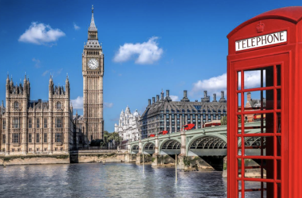
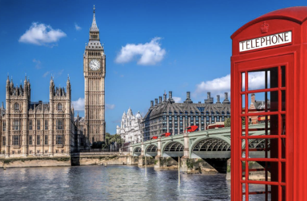

Yellowstone


Geographical Location: North America
Yellowstone is the first national park in the United States. It covers over 2.2 million acres, and provides an opportunity to see wildlife and explore geothermal areas. In fact, Yellowstone contains about half the world's active geysers.
These unique opportunities also bring out a lot of bad decisions among the tourists. Every year visitors injure themselves or the wildlife by getting close to the animals. You can see examples of people making bad decisions by visiting Yellowstone National Park: Invasion of the Idiots, Tourons of Yellowstone, or Cowboy State Daily.
Photo Gallery


Sequoia National Park


Geographical Location: North America
Sequoia National Park is a large forest located in the Sierra Nevada mountain range in California. It is famous for its gigantic sequoia and redwood trees, as well as its underground Crystal Cave. The park is a well-known attraction to many tourists, receiving more than a million visitors annually. In addition to its collection of giant trees, Sequoia National Park is also home to thousands of prevalent flora and fauna.
Perhaps the most famous feature of Sequoia National Park is the General Sherman tree – the largest tree in the world. Measuring in at 275 feet tall, the tree towers over the surrounding landscape and the people who come to view it. As of today, the General Sherman tree is estimated to be around 2200 years old.
Photo Gallery


London, England
 

Geographical Location: Europe
London is the capital of England and the UK. It has many iconic landmarks such as Buckingham Palace, Big Ben, red phone booths, and the London Eye (a ferris wheel) which overlooks the Thames river.
London is the largest city of England and the UK with a population of 9 million people. As a major global city London has strong connections with arts, entertainment, fashion, media, tourism, transportation and so much more. It also has one of the largest concentration of higher education institutions in subjects such as finance and arts in Europe.
Photo Gallery


Sofia, Bulgaria


Geographical Location: Europe
Sofia is the capital city of Bulgaria, a country located in Eastern Europe. It is part of the European Union and the primary language spoken is Bulgarian. The city's population is around 1.3 million. In addition to its urban structures, Sofia also contains a mountain peak called “Vitosha”.
Vitosha is located 30 minutes from the capital's center, and can be reached by foot, car, and by lift. The peak has an elevation of 7,520 feet and during the summer months the average temperature is around 64 degrees fahrenheit. This makes it a great sight for any type of traveler who seeks the outdoors.
Photo Gallery